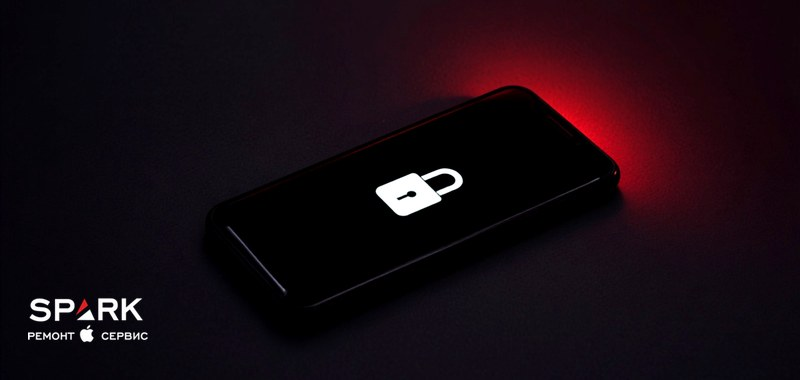
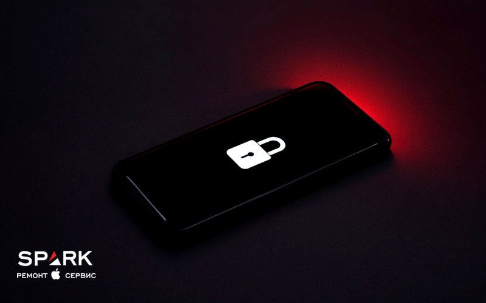

«iPhone недоступен»: что делать, если забыли пароль от айфона

Несколько неверных попыток — и вместо цифр на экране появляется «iPhone недоступен, повторите через 15 минут», а потом и вовсе «Блокировка безопасности». Телефон при этом полностью исправен: это защита, а не поломка. Разбираем, что происходит на самом деле, почему популярные трюки из роликов не работают, и что можно сделать — с потерей данных и без.
- «iPhone недоступен» и «Айфон отключён» — это не поломка, а защита после серии неверных вводов кода.
- Разблокировать iPhone, сохранив данные, невозможно: содержимое зашифровано ключом, который выводится из вашего код-пароля.
- Трюки с экстренным вызовом, «секретными кодами» и звонком на 112 не работают — это старые ролики и прямой обман.
- Единственный рабочий путь — стереть телефон и восстановить его из резервной копии.
- Перед стиранием убедитесь, что помните Apple ID и пароль: без них после сброса включится блокировка активации и телефон не запустится.
Что означает «iPhone недоступен» и почему растёт таймер
iOS считает неверные вводы кода и после каждой серии увеличивает паузу. Сначала телефон просит подождать минуту, потом пять, пятнадцать, час. Формулировка зависит от версии системы: на новых iPhone это «iPhone недоступен» и «Блокировка безопасности», на старых — «Айфон отключён, подключитесь к iTunes». Смысл один и тот же.
Это не сбой и не поломка. Так работает защита от перебора: без неё код из четырёх цифр подобрали бы за считаные минуты. Ремонтировать здесь нечего — экран, плата и аккумулятор исправны, телефон просто не пускает внутрь.
Почему Face ID и Touch ID перестали помогать
Разблокировка по лицу и отпечатку — надстройка над код-паролем, а не замена ему. iOS требует именно код после перезагрузки, после долгого простоя, после пяти неудачных попыток распознавания и при некоторых действиях с настройками. Поэтому «раньше открывался по лицу, а теперь просит цифры» — штатное поведение, а не признак неисправности. Если же Face ID перестал срабатывать сам по себе, это отдельная история и разбирается отдельно.

Экстренный вызов, «секретные коды» и другие мифы
Самый частый запрос по этой теме — как разблокировать айфон через экстренный вызов. Отвечаем прямо: никак. Ролики, где человек набирает 112, что-то вставляет в поле вызова и попадает на рабочий стол, сняты много лет назад на давно закрытых уязвимостях либо смонтированы. На актуальных версиях iOS ни один из этих способов не работает.
То же касается «инженерных кодов», «универсального пароля от сервисного центра» и программ, которые обещают снять код за пять минут, ничего не удаляя. Причина не в том, что Apple что-то скрывает, а в том, как устроено шифрование.
Почему обойти код физически невозможно
Содержимое iPhone хранится в зашифрованном виде, а ключ шифрования выводится в том числе из вашего код-пароля. Нет кода — нет ключа, и данные остаются набором нечитаемого мусора. Обойти это, сохранив фотографии и переписки, не может ни сервис, ни сама Apple: расшифровывать нечем. Именно поэтому любой честный ответ на вопрос «как открыть телефон и не потерять данные» звучит одинаково — только вспомнить код.
- «Разблокируем без потери данных за 10 минут» — обещание, которое технически невыполнимо.
- «Пришлите предоплату, снимем удалённо по IMEI» — по IMEI снимается привязка к оператору, а не код-пароль экрана.
- Программы с торрентов «для снятия пароля» в лучшем случае просто переведут телефон в режим восстановления и сотрут его — то же самое вы сделаете сами и бесплатно.
Три рабочих способа — и все они стирают телефон
Дальше начинается то, что действительно работает. Общее у всех трёх вариантов одно: содержимое телефона удаляется. Выбор между ними — это выбор удобства, а не выбор «с данными или без».
Способ 1. Кнопка «Стереть iPhone» на самом экране блокировки
Начиная с iOS 15.2, когда телефон уходит в «Блокировку безопасности», внизу экрана появляется надпись «Стереть iPhone». Нажимаете, подтверждаете, вводите пароль от Apple ID — и телефон стирает себя без компьютера. Нужны две вещи: подключение к интернету (Wi-Fi или мобильная сеть) и пароль от учётной записи, к которой привязан аппарат.
Способ 2. Режим восстановления через компьютер
Универсальный вариант, работает и на старых iPhone, где кнопки на экране нет. Телефон подключается к компьютеру и вводится в режим восстановления, после чего Finder на Mac или iTunes на Windows предложит «Восстановить». Комбинация для входа в режим зависит от модели: на iPhone 8 и новее — нажать и отпустить громкость вверх, затем громкость вниз, затем удерживать боковую кнопку до появления значка компьютера; на iPhone 7 — громкость вниз вместе с боковой; на iPhone 6s и старше — кнопку «Домой» вместе с боковой.
Способ 3. Через «Локатор» с другого устройства
Если на телефоне включена функция «Локатор», его можно стереть удалённо: с другого iPhone, iPad или через сайт iCloud, войдя в свою учётную запись. Способ удобен, когда самого телефона под рукой нет, но требует того же самого — пароля от Apple ID.
Главная ловушка: блокировка активации после стирания
Здесь спотыкаются чаще всего. Человек стирает телефон, выдыхает — и упирается в экран «Блокировка активации», который требует Apple ID и пароль прежнего владельца. Без них аппарат не запускается вообще: ни позвонить, ни настроить, ни продать.
Так работает защита от кражи, и именно поэтому мы советуем проверять доступ к учётной записи ДО стирания, а не после. Если пароль от Apple ID забыт, но почта или доверенный номер под рукой, доступ восстанавливается штатными средствами Apple. Если же учётная запись чужая — например, телефон куплен с рук и продавец не отвязал его от себя — это уже разблокировка iCloud, отдельная процедура со своими условиями и подтверждением владения.
- Телефон ваш, Apple ID помните — стирайте спокойно, после сброса войдёте в ту же учётную запись.
- Телефон ваш, пароль от Apple ID забыт — сначала восстановите доступ к учётной записи, только потом стирайте.
- Телефон куплен б/у и привязан к чужой учётной записи — стирание не поможет, нужна отвязка с подтверждением, что аппарат ваш.
- На экране надпись про корпоративное управление или профиль организации — это MDM, отдельный тип блокировки, ставится работодателем.
Когда есть смысл идти в сервис
Если вы помните пароль от Apple ID и не жалко содержимого — сервис вам не нужен, всё делается дома за полчаса. Мы предпочитаем говорить это прямо, а не звать на платную процедуру там, где человек справится сам.
Обращаться имеет смысл в других случаях. Когда телефон не входит в режим восстановления или обрывает процесс на середине — обычно дело в кабеле, разъёме или самой прошивке, и это уже диагностика. Когда после стирания встал экран блокировки активации, а учётная запись чужая. Когда на аппарате корпоративный профиль MDM. Когда важные данные были только на телефоне и надо честно разобраться, есть ли хоть какая-то копия — этим занимается восстановление данных.
Отдельная история — когда телефон открылся, но не видит SIM-карту и просит карту конкретного оператора. Это не пароль и не iCloud, а привязка к сети, с которой аппарат продавался: снимается разлочкой от оператора по IMEI. Все виды блокировок и что с ними делать мы собрали на странице разблокировки iPhone.
Коротко о главном
Итог короткий. «iPhone недоступен» — это защита, а не поломка, и обойти её, сохранив данные, нельзя ни дома, ни в сервисе: так устроено шифрование. Всё, что можно сделать, — перестать подбирать код, убедиться, что доступ к Apple ID у вас есть, стереть телефон и восстановиться из резервной копии. Если копии нет или после сброса встал экран блокировки активации — приходите, посмотрим и скажем прямо, что реально сделать в вашем случае, а что нет.
Телефон заблокирован и не пускает дальше?
Посмотрим, какая именно блокировка перед нами — код-пароль, привязка к Apple ID, MDM или оператор, — и скажем, решается ли она. Проверка бесплатная, платите только за результат.
Разблокировка iPhoneКакая у вас модель iPhone?
Проголосуйте — узнайте, что приносят чаще всего, и цену ремонта вашей модели.